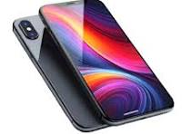

| Mobile Phone | Laptop |
|---|---|
|
 |
|
Mobile Phone: A mobile phone is a portable electronic device used for
calling, messaging, internet browsing, photography, online shopping, and
entertainment. It provides a high-quality camera, fast processor, large
storage capacity, and long battery life.
Laptop: A laptop is a portable computer used for education, office
work, programming, online classes, business, multimedia, and gaming. It
offers high performance, fast processing speed, reliable storage, and
portability, making it suitable for students and professionals.